- 一. 原理
光譜儀主要的功用是將複雜的光分解為光譜線的科學儀器，利用繞射光柵 配合光繞射的原理來產生光譜，繞射光柵的功能是使光源能夠依照不同的波長 分離出來，也可以視為一個三菱鏡，入射光是由多種波長混合而成，經過三菱 鏡後便會因不同波長對折射率的行進速度不同，而分離成不同方向的行進光。 當複色光通過分光元件進行分光後，依照光的波長或頻率大小排列形成的圖 案。光譜中最大的一部分可見光譜是電磁波譜中人眼可見的一部分， 在這個波 長範圍內的電磁輻射被稱作可見光。利用光譜儀可測量物體表面反射的光線、 穿透物體的穿透光和物體的吸收光。
利用光碟片來取代光譜儀中的繞射光柵。光碟片內部有許多等距、平行的 鋸齒狀凹槽，當光碟片在日光下會見到多種顏色，就是因為繞射效應將光波分 離的結果
- 二.性能描述及實驗方法
分光技術的基本原理是將束照到的電磁輻射到所述材料的樣品，並觀察它 如何響應於這樣的刺激。響應通常被記錄為輻射波長的函數。作為波長函數的 響應圖稱為光譜。
每種類型的分子和原子都會以其特有的方式反射、吸收或發射電磁輻射。 光譜學使用這些特徵來推斷和分析樣品的成分。
光譜儀依分光元件的不同分為稜鏡光譜儀、光柵光譜儀和干涉光譜儀，其 中以光柵光譜儀最為常見。光柵可分為透射與反射兩種，透射光柵是在光學平 玻璃上刻劃出一道道等間距的刻痕，刻痕處不透光，未刻處則是透光的狹縫； 反射光柵則是在金屬反射鏡上刻劃一道道刻痕，刻痕處不反光，未刻處則可以 反光。當光線照射到光柵時會產生繞射現象，由於不同波長的光線會有不同的 繞射角而達到分光的效果。不同波長 λ 的光線照射到光柵後其入射角 θ 及繞 射角 α 的關係遵循著下列的光柵方程式：
d(sinθ+sinα)=mλ ⇒ α=sin−1(mλ/d−sinθ)
其中 d 為光柵的狹縫間距，m=0, ±1, ±2,... 為繞射的級數，由此方程式可以看 出，當光柵的狹縫間距為定值時，不同波長的光線會有不同的繞射角，藉以達 到分光的效果。
以下面右圖為例，波長 550nm 的綠光以θ = 14。的入射角，穿透每 mm 有 1000 條 線(狹縫間距為 1000nm)的透射光柵後，所產生的第 1 級繞射角為
α =sin−1(1×550/1000−sin14。)=17.9。
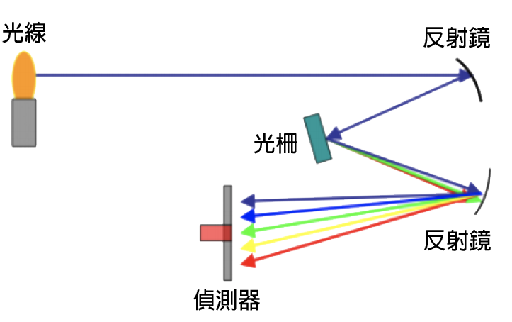 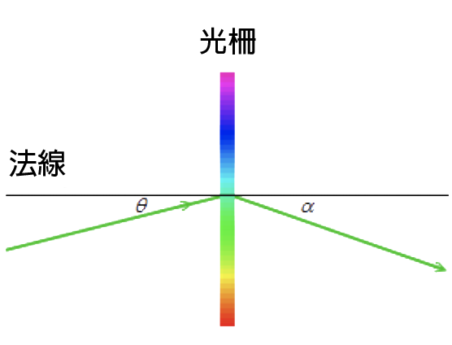
- 三.運作功能方塊圖
- 四.外觀與內部機械架構圖
外部架構▲
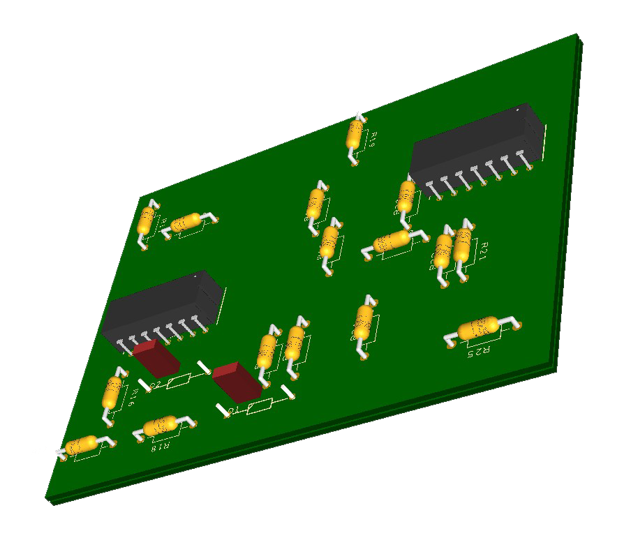
內部機械架構▲
- 五.電子線路圖
- 六.雙層電路板正反面佈線圖
- 七.電路板3D模擬圖
- 八.機構圖與電路板爆炸圖
機構爆炸組裝圖▲
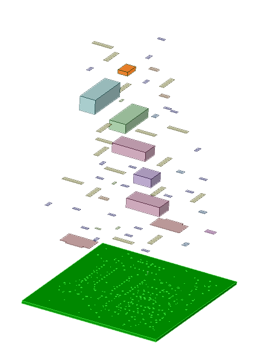
電路板爆炸組裝圖▲
- 九.零件表
- 十.光譜儀實體製作
1.光譜儀成品
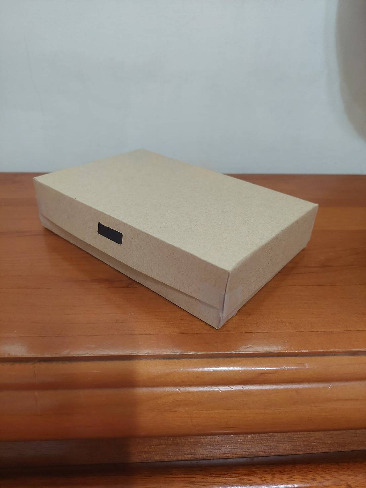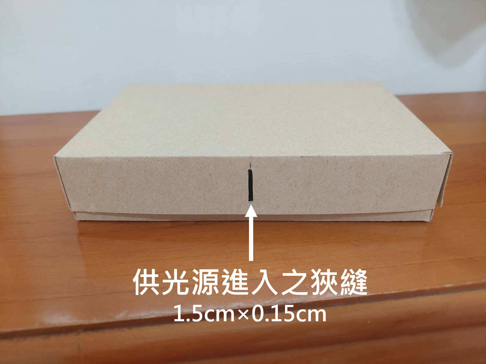
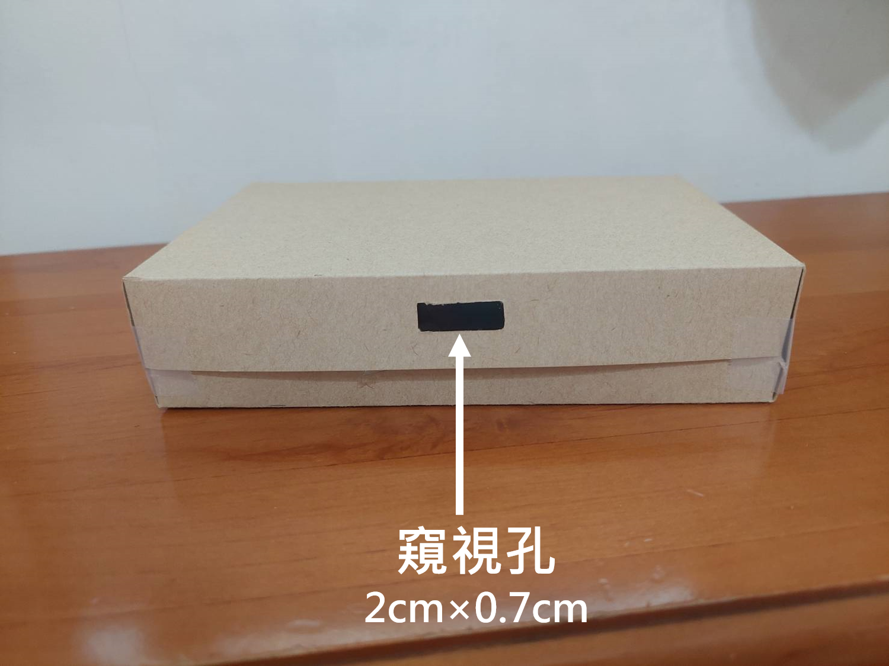
2.光譜儀內部
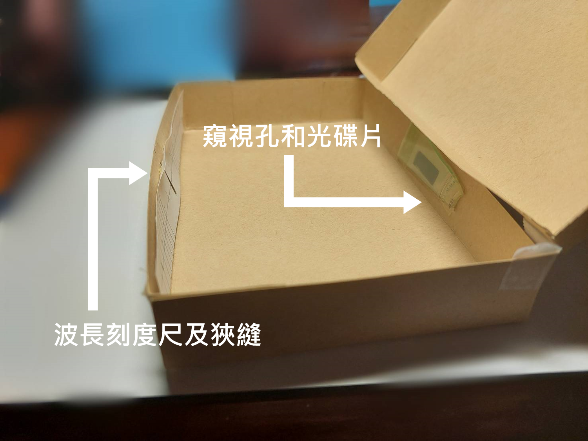3.實際測量
(1)太陽光
將光譜儀對向太陽可以看到左右對稱的光譜，並由下圖可見為連續光譜，散射後
有紅、橙、黃、綠、青、藍、紫色，波長約在450nm~700nm左右。
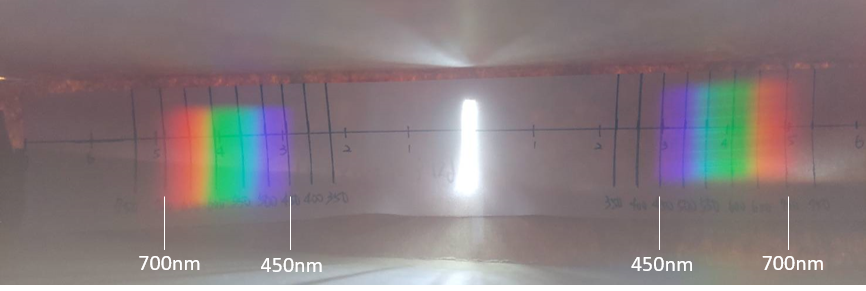
(2)日光燈
將光譜儀改對日光燈可見左右對稱的光譜，並由下圖可見為不連續光譜，散射後
可見紅、橙、綠、青、藍5色獨立不連續光譜，波長約在450nm~680nm左右。
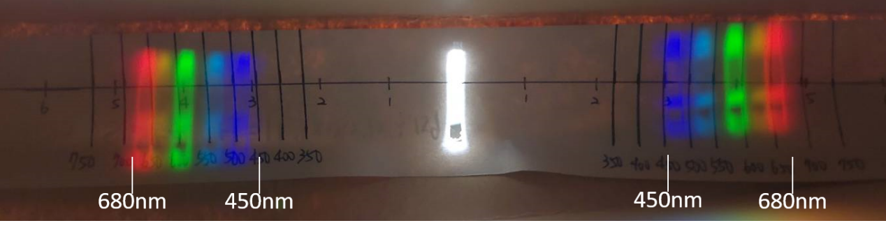
(3)一般白光LED燈泡
將光譜儀對向一般白光LED燈泡可以看到左右對稱的光譜，並由下圖三可見為連
續
光譜，散射後紅、黃、綠、紫色較為明顯，波長約在450nm~670nm左右。
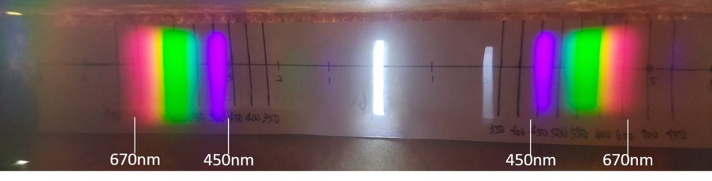